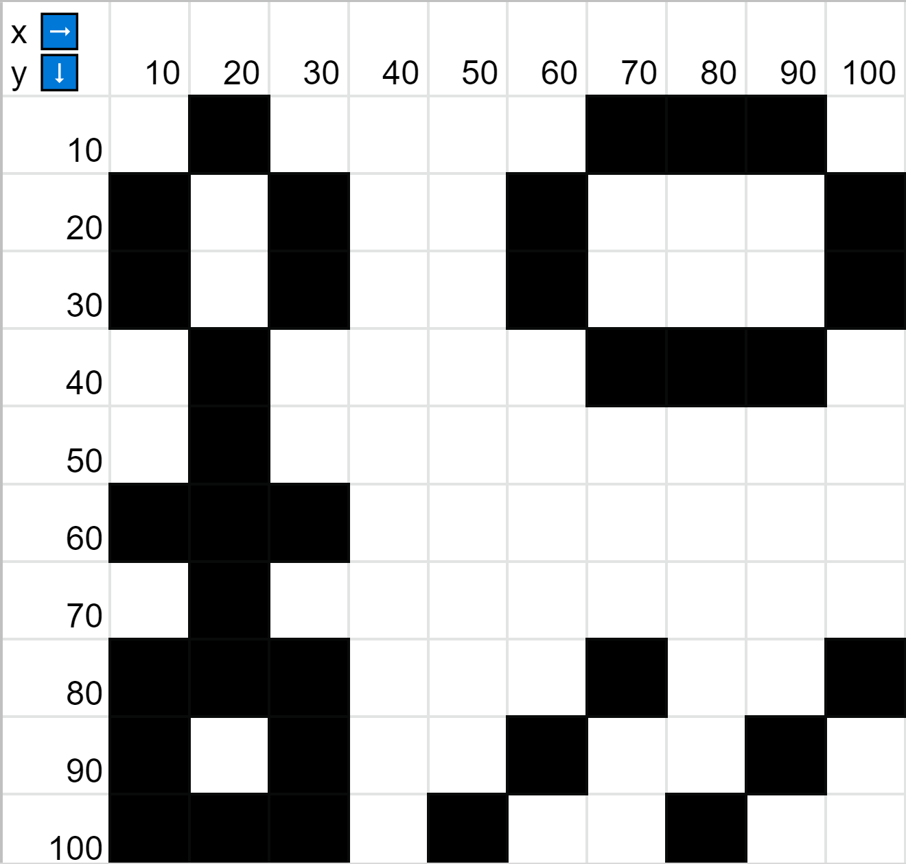

-
Project 1.1 - Drawing ShapesRecreate the following image with as much accuracy as possible. Try using a combination of shapes (lines, ellipses, and rectangles) to achieve the same look.
 -
Project 1.2 - Drawing a FaceDraw a face with two eyes, a nose, a mouth, and two other facial features (ears, hair, etc.).

Add at least two colors to the face using the fill() function.
Finally, add comments before the line(s) of code that comprise each facial feature. -
Big Project 1Develop and draw a fish or other underwater object that will swim in our aquarium.
Your fish must use at least one ellipse/circle, rect/square, arc, line, quad, and triangle.
Your fish must use at least 2 different fill colors and at least two different stroke colors or stroke thicknesses.
Your fish must be representative of something that lives or travels in or on the water.
You must use comments to indicate what each part of your fish is. -
Project 2.1 - Displaying ImagesCreate 3 images and display them to the screen as a collage. Use the notes in the slideshow to accomplish this.
-
Project 2.2 - Changing Literals to VariablesTake either Project 2.1 or one of your prior projects and convert each literal in the draw function to variables.
-
Project 2.3 - Moving ShapesFind three images different from the ones you used in Project 2.1 that you want to move in one direction across the screen. All three images should be thematically related.
Use one variable tro move all three shapes. For this, do not use transform(). You may use the same image 3 times as long as all three are separate moving versions. -
Big Project 2 - Animating the FishUsing scale, transform, and/or rotate, move your fish across the screen in some way. Your fish does not neet to expand or spin, but you should use rotate and scale to size and orient your fish.
Bring all your fish code inside a function that is named yourNameFish(). At the beginning of the function, write push(), and at the end of the function, write pop(). -
Project 3.1 - Weather StationMake a copy of my demo project and duplicate the material. This project grabs live weather data from the National Weather Service.
Your code should have at least three sets of conditional statements that each change an aspect of the weather station depending on the value of the temperature.
You could: change the background color, draw a different image to the screen, or display text to the screen.
For each set of conditional statements, you should have at least three options (Ex: hot, cool, cold).
**COMMENT YOUR CODE -
Project 3.2 - SoundboardCreate a soundboard that has 3 sounds overall.
These sounds should: have an appropriate theme, have intructions on how to activate the various sounds on the soundboard, activate at least one sound when a key is pressed, activate at least one sound when the mouse is pressed in a specific area of the screen, and use a third event to activate a third sound.
For the keypress and mousepress, you can use the boolean keyIsPressed or mouseIsPressed. For the third example, you must use an event. -
Project 3.3 - Stoplight

Create a stoplight with red, yellow and green lights.
When the program starts, no lights should be on (empty or black circles).
Each time you click on the green or yellow light, turn that light on and off.
When the green and yellow light are both on, turn the red light on. The red does not need to turn on and off on its own. When green or yellow are turned off, red should be turned off as well. -
Big Project 3 - Tic-Tac-ToeCreate a tic-tac-toe grid.
Depending on where the person clicks in the grid, have your program draw an X or an O.
Make the turn alternate between Xs and Os when a user clicks a box.
Detect when someone has won. Draw a line and display something like "X Has Won!".
Prevent the user from clicking the same box twice.
Prevent the user from clicking anywhere after a win.
Have a key press reset the game so they can play again.